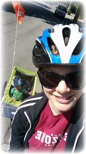
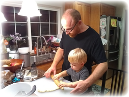

Christopher's First Birthday
The Hicks Family has been blessed by another wonderful year! It started off with Brie and Steve celebrating their 5th wedding anniversary—a bit more low key than previous anniversaries, but special nonetheless. Engrossed in a book
Brianna still works part time at Cornerstone Research. She continues to enjoy interesting case work and wonderful colleagues. Steve has found himself reorganized into the "Languages, Optimizations, and Libraries" (LOL) group at Google, where he's thankful for a long enough "to-do" list to keep him gainfully employed for years to come. Up close and personal

Biking with Mommy
Both love (but are exhausted from) their most rewarding job of being the parents of an adorable toddler! Christopher turned one in March (yes, they all survived the first year!). Since then they have enjoyed many other "firsts": walking, talking, swimming lessons, Easter egg hunts, hair cuts, zoos, museums, trick-or-treating (the holidays are new and fresh for everyone). It is a joy to experience the world through his eyes - the wonders of garbage pick-up day, fire trucks, balls, cars, play-doh, and Dr. Seuss books. Christopher is a big helper and wants to assist with laundry, cooking, and grocery shopping whenever possible, and then some. The family will embark on another adventure in January when Christopher is expected to become a big brother. 
Baking with Daddy
The Hicks family has been blessed with a great nanny-share this past year and a half (one nanny, two families). Christopher loves playing and crafting with the Widman girls (under the superb care of Ms. Emma). Their church community group (conveniently hosted by the same Widmans) finally made it through Revelation (only took a couple years!) and just wrapped up Ephesians. Christopher with pumpkins
There were some wonderful travels and family visits this year. The extended Cardiff clan gathered in Yosemite for the Fourth Cardiff Family Conference, and then again in Virginia for the wedding of Brie's sister Gwendolyn to Luke Routhier (Christopher did an excellent job as ring bearer). Steve's parents came out to help celebrate Christopher's first birthday and again in July. Everyone enjoys weekly video conferences with the grandparents! In August, Steve traveled to Oregon for a Gator wedding, and then to Wyoming to see the total solar eclipse and enjoy a quick visit with the Fertigs.
Homeownership is great, but definitely comes with its challenges (like when a 30-foot tree fell over in a storm onto three other neighbors' yards; thankfully no one was hurt!). They also have a guest bedroom now, so if anyone is in the area, they would love to see you!
Many blessings to you all The Hicks Family: Brie (and "Mozzarella"), Steve, Christopher, and Roary the Lion P.S. For your viewing pleasure: |